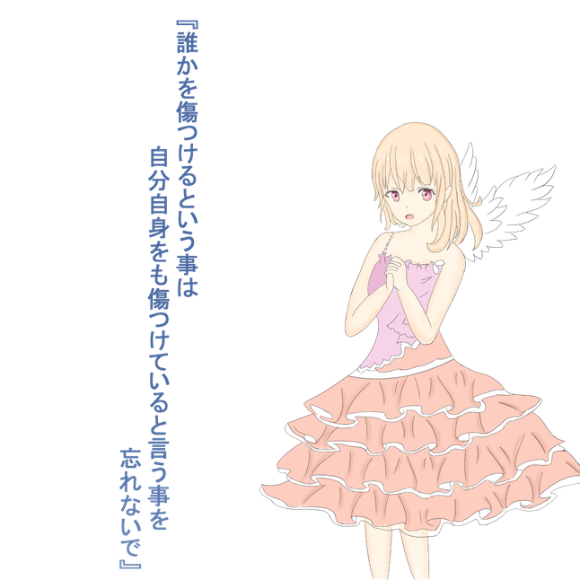
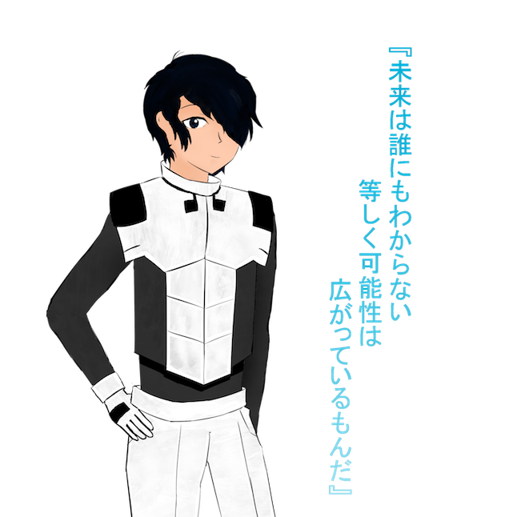
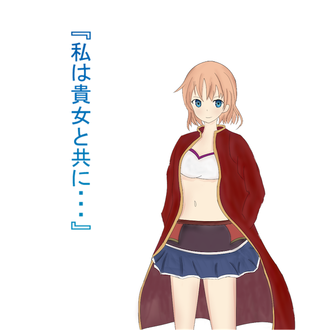
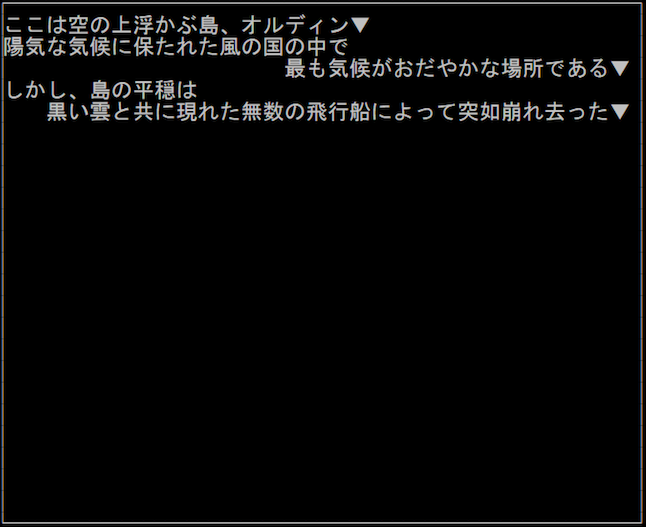

| タイトル | The beautiful sky |
|---|---|
| ジャンル | テキストベースRPG |
| 発売日 | 2018年7月27日 |
| シナリオ原案 | 加藤昌宏 |
| キャラクターデザイン | 武下和輝 / 大場真人 |
Story
「…………姫様を……頼む……」
風の國の未来をアリストとリーレルは託されて、國の民の肉体と魂は、大気に溶け、この世界の一部と化した。 そして、アリストとリーレルも姿を消すこととなる。 皆を助けるため、託された思いと共に、地上に降り生きることを選んだのだ。 新たなる戦乱の世を、己の知略とナオキの名声をもって乗り越えんとするアリスト。 リーレルを失った悲しみに沈むアリスト。 避けられぬ戦の炎が、今まさにオルタナティブを飲み込もうとしていた。 それは、地下全土に広がる戦乱の幕開けでもあった...
詳細な世界観についてはこちら
Character

アリスト
天の國の第三姫だが生まれてすぐ父により王宮よりかけ離れた塔の中で幽閉されていた。 性格は優しく、常に笑顔でいる。

ナオキ
地にある國のオルタナティブの第一王子好奇心が強くどんな事でも興味を持ち一度調べてしまうとやめられない性格。

リーレル
天の國第三姫の騎士古代兵器を使う事ができる。そのため平民でありながらアリストの騎士になる事ができた。System

シナリオ
オリジナルのシナリオ
このゲームのためのオリジナルのシナリオ。
メインストーリーの他にも
ミニシナリオイベントが実装されています。
マップ
マップ上をカーソルで移動
それぞれのキーをA=← W=↑ S=↓ D=→ としてマップ上を移動できます。
スペースキーを使えばステータスやアイテムを確認することもできます。
戦闘
馴染み深いコマンド戦闘
初期RPGをイメージしたコマンド戦闘を採用。
状況に応じた選択や装備が勝敗を左右します。
Download
About us
| プロジェクトリーダー | C0116080 加藤昌宏 | キャラクターデザイン | C0116318 武下和輝 |
|---|---|---|---|
| ゲーム設計 | マーケティング | ||
| シナリオ | |||
| キャラクターデザイン | C0116061 大場真人 | メインプログラム | C0116248 松田悠 |
| 記録･資料 | Webデザイン |